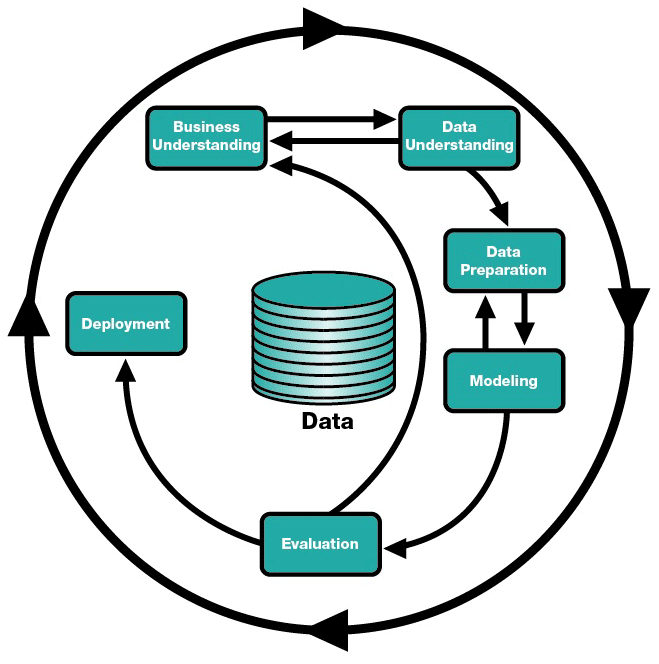

Data Mining Process#
Proses penambangan data adalah pendekatan terstruktur untuk mengekstraksi pola dan wawasan yang bermakna dari data. Hal ini sering digambarkan sebagai serangkaian langkah yang memandu ilmuwan dan analis data mulai dari definisi masalah hingga penerapan solusi. Salah satu kerangka kerja yang paling banyak digunakan untuk proses ini adalah CRISP-DM (Proses Standar Lintas Industri untuk Penambangan Data), yang terdiri dari enam fase utama:

1. Business Understanding#
Ini adalah phase pertama dan paling penting dari proses penambangan data. Ini berfokus pada pemahaman masalah bisnis dan menentukan tujuan proyek penambangan data.
Key Activities:
Define the Problem: Nyatakan dengan jelas masalah bisnis yang ingin Anda selesaikan. Misalnya, “Mengapa pelanggan berpindah?” atau “Bagaimana kita dapat meningkatkan penjualan?”
Set Objectives: Tentukan apa yang ingin Anda capai dengan proyek penambangan data. Misalnya, “Kurangi churn pelanggan sebesar 20%”.
Identify Stakeholders: Pahami siapa yang akan mendapat manfaat dari proyek ini dan apa harapan mereka.
Define Success Criteria: Tetapkan bagaimana Anda akan mengukur keberhasilan proyek (Accuracy, Return on Investment, dll).
Example: Sebuah perusahaan telekomunikasi ingin mengurangi churn pelanggan. Tujuan bisnisnya adalah untuk mengidentifikasi pelanggan yang kemungkinan besar akan keluar dan mengambil tindakan proaktif untuk mempertahankan mereka.
2. Data Understanding#
Pada phase ini, Anda menjelajahi dan membiasakan diri dengan data yang tersedia untuk proyek tersebut. Tujuannya adalah untuk mengidentifikasi sumber data yang relevan, menilai kualitas data, dan mendapatkan wawasan awal. Outlier detection memainkan peran penting dalam memahami distribusi data dan memastikan kualitas data.
Key Activities:
Collect Data:
Gather atau Kumpulkan data dari berbagai sumber (database, API, file).
Pastikan data relevan dengan masalah bisnis.
Describe Data:
Summarize atau Meringkas data (jumlah catatan, variabel, tipe data).
Gunakan Descriptive Statistics (mean, median, mode, standard deviation, etc.) untuk memahami distribusi data.
Explore Data:
Lakukan Exploratory Data Analysis (EDA) untuk mengidentifikasi pola, trend, dan anomali.
Visualisasikan data menggunakan plot (histograms, box plots, scatter plots) untuk mendeteksi outlier dan memahami hubungan antar variabel.
Verify Data Quality:
Periksa missing values atau nilai yang hilang, inkonsistensi, dan kesalahan.
Identifikasi dan analisis outlier untuk menentukan apakah outlier tersebut merupakan titik data yang valid atau kesalahan.
Example: Perusahaan telekomunikasi mengumpulkan data tentang demografi pelanggan, pola penggunaan, riwayat penagihan, dan interaksi layanan pelanggan. Mereka menemukan bahwa beberapa catatan memiliki nilai yang hilang untuk bidang “kepemilikan pelanggan”.
3. Data Preparation#
Ini seringkali merupakan phase yang paling memakan waktu dan melibatkan pembersihan, transformasi, dan persiapan data untuk pemodelan.
Key Activities:
Data Cleaning: Menangani missing values, menghapus duplikat, dan memperbaiki kesalahan.
Data Transformation: Normalize or Standardize data, membuat fitur baru (rekayasa fitur), dan menyandikan variabel kategori.
Data Integration: Menggabungkan data dari berbagai sumber.
Data Reduction: Kurangi ukuran kumpulan data dengan memilih fitur atau pengambilan sampel yang relevan.
Example: Perusahaan telekomunikasi membersihkan data dengan memasukkan nilai yang hilang untuk “masa jabatan pelanggan” dan membuat fitur baru yang disebut “penggunaan bulanan rata-rata” dengan menggabungkan data penggunaan.
4. Modeling#
Pada phase ini, Anda memilih dan menerapkan algoritma data mining untuk membangun model prediktif atau deskriptif.
Key Activities:
Select Modeling Techniques: Pilih algoritma yang sesuai berdasarkan masalahnya (classification, regression, clustering).
Build Models: Latih model menggunakan data yang telah disiapkan.
Tune Models: Optimalkan parameter model untuk meningkatkan kinerja.
Validate Models: Uji model pada data yang tidak terlihat untuk memastikan model dapat digeneralisasi dengan baik.
Example: Perusahaan telekomunikasi menggunakan algoritma pohon keputusan untuk memprediksi perpindahan pelanggan. Mereka melatih model berdasarkan data historis dan menyesuaikannya untuk meningkatkan akurasi.
5. Evaluation#
Phase ini berfokus pada penilaian kinerja model dan menentukan apakah model tersebut memenuhi tujuan bisnis.
Key Activities:
Evaluate Results: Ukur performa model menggunakan metrik seperti akurasi, presisi, perolehan, skor F1, atau ROC-AUC.
ROC (Receiver Operating Characteristic) Curve → Grafik yang menunjukkan hubungan antara True Positive Rate (TPR) dan False Positive Rate (FPR) pada berbagai threshold classification.
AUC (Area Under the Curve) → Nilai antara 0 dan 1 yang mengukur seberapa baik model membedakan antara dua kelas (churn vs. tidak churn).
Review Business Objectives: Pastikan model selaras dengan tujuan bisnis awal.
Identify Limitations: Pahami kelemahan model dan area potensial untuk perbaikan.
Decide Next Steps: Tentukan apakah akan melanjutkan penerapan atau meninjau kembali fase sebelumnya.
Example: Perusahaan telekomunikasi mengevaluasi model prediksi churn dan menemukan bahwa model tersebut memiliki akurasi 85%. Namun, mereka menyadari bahwa model tersebut berkinerja buruk bagi pelanggan dengan penggunaan rendah.
6. Deployment#
Pada phase terakhir, model diterapkan ke lingkungan produksi yang dapat digunakan untuk membuat keputusan atau menghasilkan wawasan.
Key Activities:
Deploy the Model: Integrasikan model ke dalam proses bisnis (CRM / Customer Relationship Management systems, dashboards).
Monitor Performance: Terus lacak performa model dalam skenario dunia nyata.
Maintain the Model: Perbarui model saat data baru tersedia atau kondisi bisnis berubah.
Document Results: Membuat laporan dan dokumentasi untuk pemangku kepentingan.
Example: Perusahaan telekomunikasi menerapkan model prediksi churn ke dalam sistem manajemen hubungan pelanggan (CRM). Sistem menandai pelanggan yang berisiko, dan tim pemasaran mengirimi mereka penawaran retensi yang dipersonalisasi.
Summary of the Data Mining Process#
Business Understanding: Definisikan masalah dan tujuan.
Data Understanding: Jelajahi dan menilai data.
Data Preparation: Membersihkan, mengubah, dan menyiapkan data.
Modeling: Membangun dan menyempurnakan model prediktif atau deskriptif.
Evaluation: Menilai kinerja model dan keselarasan dengan tujuan bisnis.
Deployment: Terapkan model dan pantau kinerjanya.
Why is This Process Important?#
Proses penambangan data memastikan bahwa project data bersifat sistematis, dapat diulang, dan selaras dengan tujuan bisnis. Hal ini membantu menghindari kesalahan umum, seperti penggunaan data berkualitas buruk, membuat model yang tidak relevan, atau gagal memberikan wawasan yang dapat ditindaklanjuti.